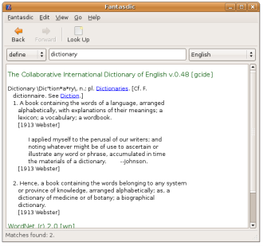
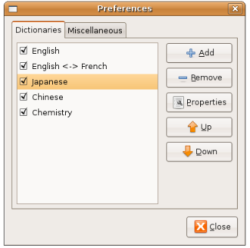

Fantasdic is a dictionary application. It allows to look up words in various dictionary sources. It is primarily targetting the GNOME desktop but it should work with other platforms, including Windows. Fantasdic is Free Software.
Dictionary sources may be of various types such as files, databases, websites or servers. Currently supported dictionary sources are:
Thanks to its flexible architecture, Fantasdic can be easily extended to support more dictionary sources.
Fantasdic comes with pre-configured dictionaries but dictionaries can be changed or added in the settings at any time.
Sometimes, reading through emails or web pages, you'll want to look up several words. When the "scan clipboard" option is enabled, select a word from any application, click "copy" and Fantasdic will look up this word for you.
If you're interested in the development of Fantasdic, you can get the latest development version using this command:
$ svn checkout http://svn.gnome.org/svn/fantasdic/trunk
You can also browse the source code with the web interface.
You should get Fantasdic from your distribution, but if you can't find it there or are looking for the latest version, try the link below.
[fantasdic-1.0-beta5]
There are several ways to contribute to the Fantasdic project.
Testing and reporting bugs.
Developing. You can find the latest source code in the GNOME SVN, fantasdic module.
Translating, localize the user interface and documentation for your language.